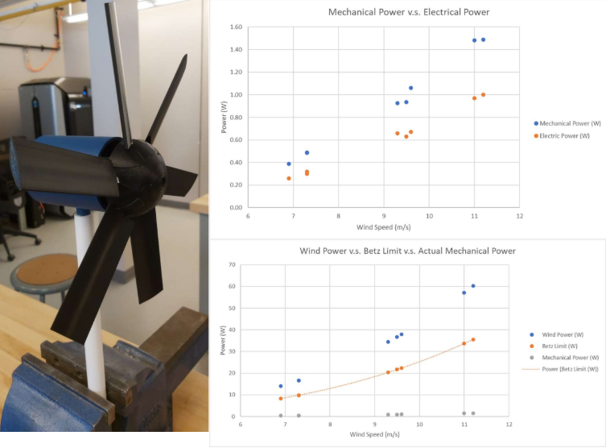
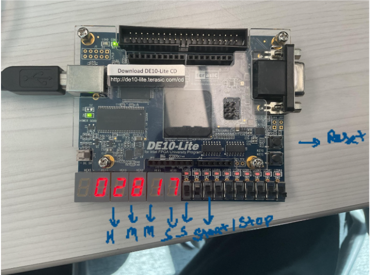
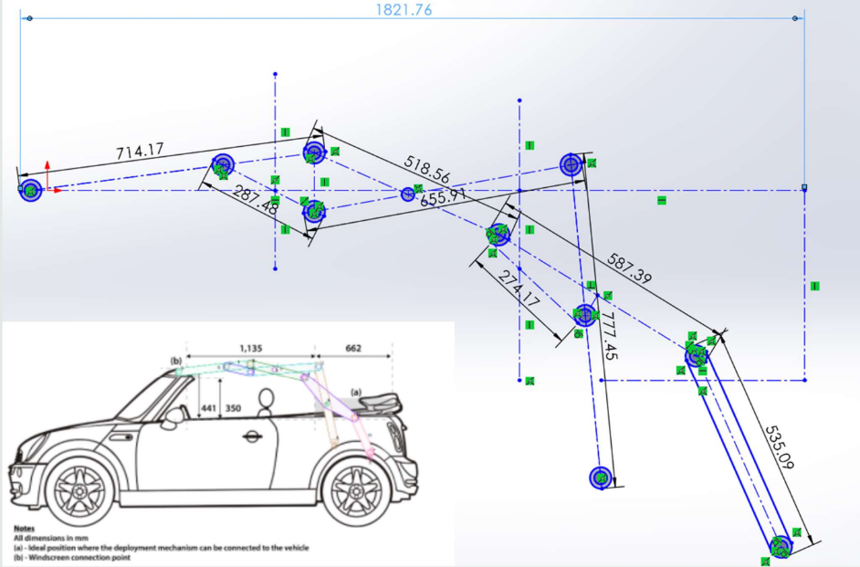

Wind Turbine Project
Developed and managed a small-scale vertical axis wind turbine (VAWT) project aimed at solving energy scarcity in remote Northern Ontario communities.
Read the case studyMechatronic Engineering
Hussainali Saiyed
Hello, I am
I design integrated mechanical, electrical, and software solutions that bring products to life. Passionate about robotics, automation, and human-centered engineering.
Embedded control, CAD, rapid prototyping, and sensor integration.
From prototype to deployment with clear documentation.

I am a mechatronic engineering new graduate focused on building intelligent systems that blend mechanics, electronics, and software. My work highlights attention to detail, strong documentation, and an eagerness to learn in multidisciplinary teams.
In academic and personal projects, I have worked on motion control, automation systems, and sensor-driven robotics. I thrive in environments where cross-functional collaboration and rapid iteration are essential.
Bachelor of Mechanical Engineering(Mechatronics)
Sheridan College Institute of Technology · 2025
Mechanical Engineering Intern · Sheridan College
Jan 2025 - Aug 2025
Automation Technician (Co-op) · Pumps Manufacturing
May2024 – Aug2024
Project Coordinator (Co-op) · Landscaping Company Limited
May2023 – Aug2023

Developed and managed a small-scale vertical axis wind turbine (VAWT) project aimed at solving energy scarcity in remote Northern Ontario communities.
Read the case study
System Architecture: Engineered a modular digital stopwatch using VHDL and implemented it on a DE-10 Lite FPGA board.
Explore the build log
Engineered a complex 7-bar scissor mechanism to facilitate a seamless transition between open-air and closed-top driving modes while maintaining structural integrity.
View project details
Interested in collaboration, full-time roles, or research opportunities? Reach out and I'll respond quickly.